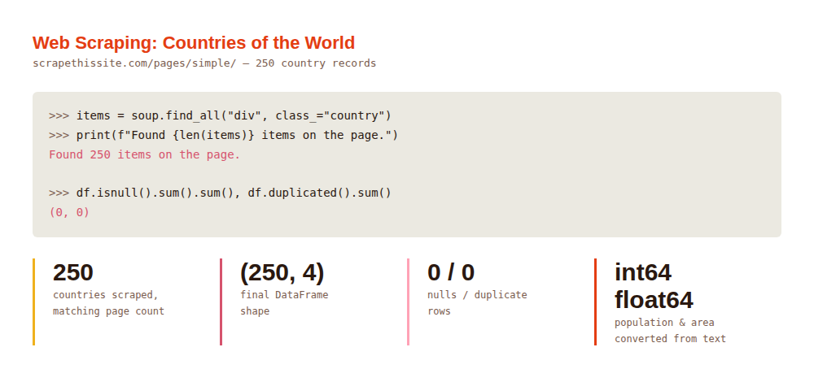
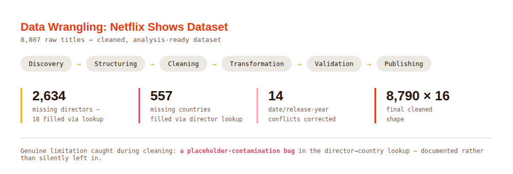
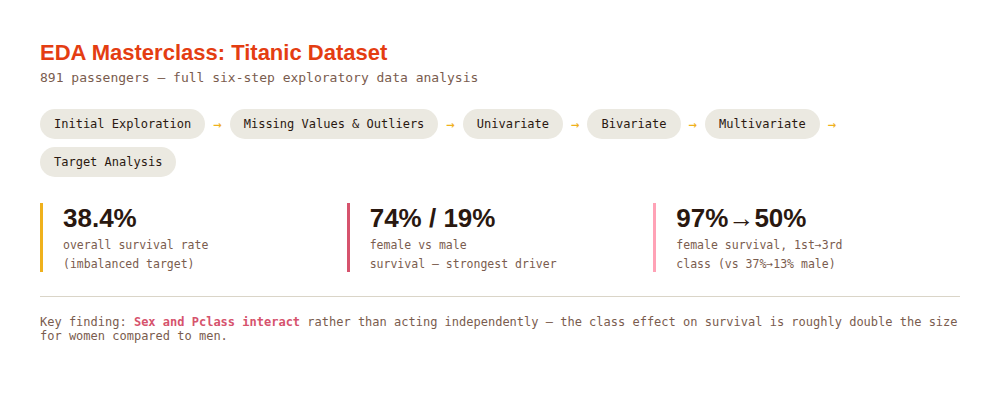

Chelsea
Mogore
Software EngineerData/AI Specialist
Software Engineer with a First Class degree in Informatics & Computer Science and hands-on experience delivering production systems in the financial sector. Skilled in building full-stack applications with Vue.js, Laravel, and MySQL, with experience automating workflows, integrating APIs, and deploying scalable solutions — currently deepening a Data & AI specialization through hands-on work with real, messy datasets.
Resume
Background
Education
B.Sc. Informatics and Computer Science
- Graduated with First Class Honours; placed on the Dean's List.
- Relevant coursework: Data Structures & Algorithms, AI & Machine Learning.
Work Experience
- Built a ticketing system to centralize IT and client support inquiries, eliminating manual email/spreadsheet tracking and improving visibility into open issues.
- Integrated the Gmail API with Pub/Sub into the ticketing workflow to auto-convert emails into support tickets and trigger real-time notifications.
- Developed and optimized commission calculation modules for unit funds, automating payout workflows and eliminating manual errors in financial reporting.
- Enhanced KYC and client onboarding workflows with document upload/approval modules, reducing account setup delays and improving client experience.
- Implemented RabbitMQ-based messaging queues for asynchronous tasks, boosting system reliability during peak activity.
Skills
FRONTEND
Vue.js, HTML, CSS, JavaScript, Tailwind CSS, Foundation
BACKEND & LANGUAGES
Laravel, Node.js, PHP, MySQL, CodeIgniter, REST APIs, Python, Java
CLOUD & INFRASTRUCTURE
Google Cloud Console, Docker, Vagrant, Homestead, Ansible
MESSAGING & INTEGRATIONS
RabbitMQ, Gmail API (Pub/Sub, OAuth)
TOOLS & PLATFORMS
GitHub, Figma, Agile methodologies, Microsoft Office Suite
Projects
Selected work



Lab Challenges
Challenge writeups
No challenges published yet
This section will hold problem statements, approach, tools used, and lessons learned from completed lab challenges and CTFs as they're finished. Check back soon.
Contact